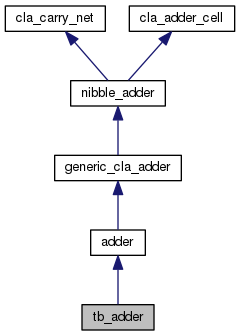

Linear Regression
Linear Regression IP-core in VHDL
Pagina Principale
Pagine collegate
Moduli
Design Unit List
File
Design Unit List
Design Units
Design Unit Hierarchy
Design Unit Members
tb_adder Entity Reference
Diagramma delle classi per tb_adder

[
legenda
]
Diagramma di collaborazione per tb_adder:
[
legenda
]
Entities
behavior
architecture
La documentazione per questa classe è stata generata a partire dal seguente file:
Src/adder/
tb_adder.vhd
tb_adder
Generato Lun 3 Lug 2017 18:36:16 per Linear Regression da
1.8.11
 1.8.11
1.8.11